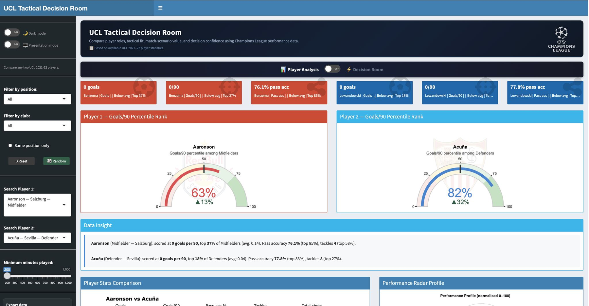

Live R Shiny Dashboard
UCL Tactical Decision Room
Interactive football analytics dashboard comparing Champions League players, tactical scenario value and decision confidence. The project demonstrates dashboard design, visual analytics, player comparison logic and decision-support communication.
R ShinyFootball analyticsInteractive dashboardDecision support